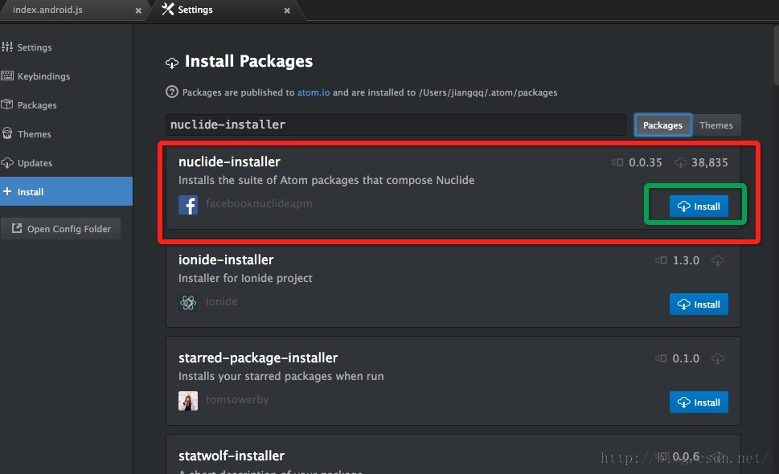
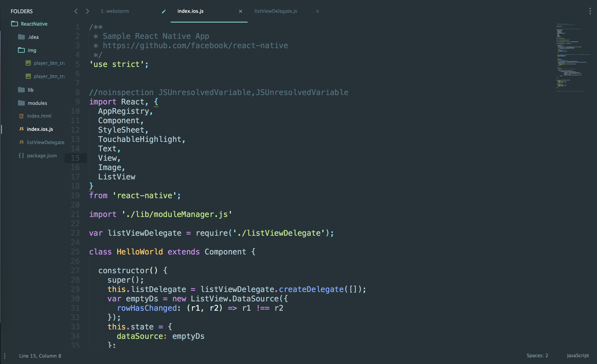
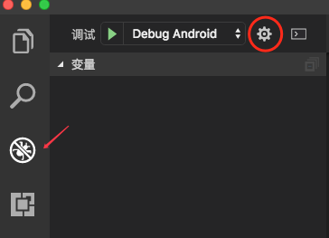
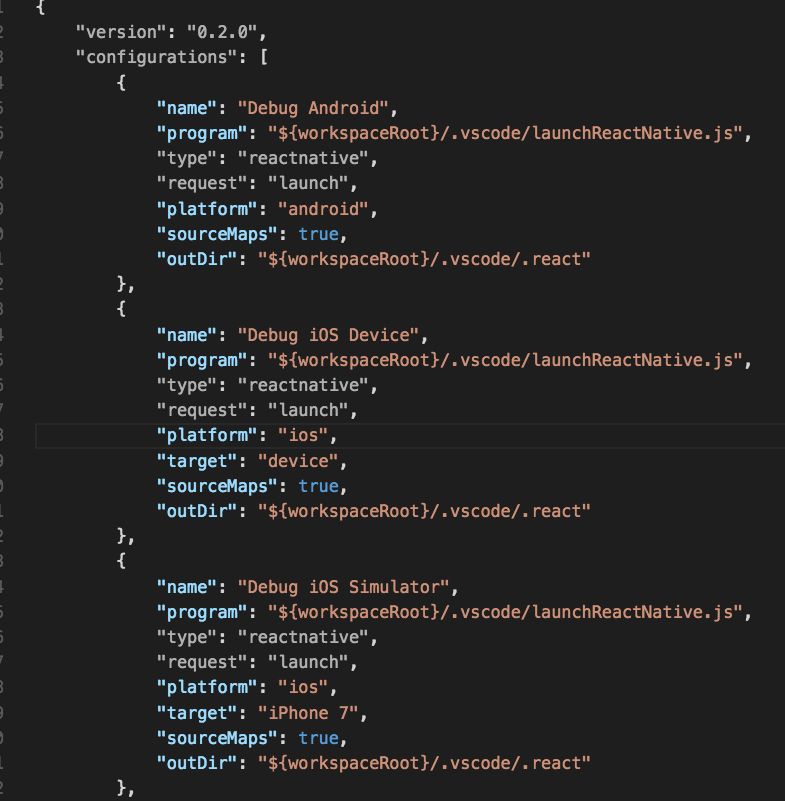

这个系列记录了我正式开始学习React Native的历程与心得,以及一些踩过的坑,本篇将讲述使用Visual Studio Code开发RN时,该如何搭建集成开发环境,代码智能提示,以及如何调试.
开发RN的IDE一览
主流IDE
Nuclide
Nuclide是Facebook专门为React开发的IDE，因此，Nuclide拥有很好的语法补全、类型检查等支持。
本质上，Nuclide是Atom基础上的一系列插件集合。因此，要使用Nuclide，首先需要安装Atom。Atom是Github推出的开源编辑器。是使用node.js来作为插件的语言的。
- 安装atom
从Atom官网下载安装. - 安装Nuclide
打开Atom，选择Preferences–>install，输入Nuclide进行搜索并安装。
 - 不建议使用,因为atom是真的太卡,的太卡,太卡,卡…
Sublime
- 安装Sublime Text 3
到Sublime Text官网下载。
选对相应的平台进行安装即可。 - 安装Package Control
在Sublime Text 3中使用PackageControl安装插件。
使用Ctrl + ,或者通过View–>Show Console打开命令行，粘贴以下代码：import urllib.request,os,hashlib; h = '2915d1851351e5ee549c20394736b442' + '8bc59f460fa1548d1514676163dafc88'; pf = 'Package Control.sublime-package'; ipp = sublime.installed_packages_path(); urllib.request.install_opener( urllib.request.build_opener( urllib.request.ProxyHandler()) ); by = urllib.request.urlopen( 'http://packagecontrol.io/' + pf.replace(' ', '%20')).read(); dh = hashlib.sha256(by).hexdigest(); print('Error validating download (got %s instead of %s), please try manual install' % (dh, h)) if dh != h else open(os.path.join( ipp, pf), 'wb' ).write(by)如果安装失败,请看这里. - 安装React Native 需要用到的插件
- React Native 开发推荐的一些插件：
ReactJS：支持React开发，提供JSX代码提示，高亮显示，ReactJS官方介绍Emmet：前端开发必备，能够存储和重用开发代码块，Emmet介绍Terminal：在Sublime中打开终端并定位到当前目录，（快捷键cmd+shift+T）react-native-snippets：react native 代码片段，react-native-snippets官方介绍 - 打开Package Control：点击菜单栏Preferences–>Package Control 或者使用快捷键 Ctrl + Shift + T
- 输入install选中：Package Control:install package
- 等待几秒，在弹出的终端中输入想要安装的插件。
最终安装好插件后界面如下：

WebStorm
之前做过web相关的同学们，对于WebStorm IDE应该非常熟悉了。这个IDE是jetbrains公司旗下的一款JavaScript开发工具，被广大的中国JS开发者誉为“Web前端开发神器”等。他与Interllij IDEA 同源，集成了Interllij的部分JavaScript功能。Interllij版本已经支持React了，所以在现如今的开发阶段WebStorm已经算是支持性最好的IDE了。
这里不想再赘述了,网上一抓一大把的IDE配置,不磨叽了.
Ps:另外，由于WebStorm的内存占用500M左右，对于小内存的开发者来说，不是最好的选择。
非主流IDE
Visual Studio Code
首先明确一下，这个Visual Studio Code（以下简称vscode）是一个带GUI的代码编辑器，也就是只能完成简单的代码编辑功能，并不是一个集成开发环境（IDE）。而Visual Studio、WebStorm这类的开发工具是IDE，功能强大，这两个是不一样的概念。
但是,它的定制度很高,经过配置后可以做各种开发语言的IDE,作为文本编辑器启动速度比atom,Sublime3快了百十来倍;作为React Native的IDE,无论是智能提示还是代码高亮亦或是调试,比Web Storm丝毫不逊色.
最重要的是,它轻量啊!!!好处多多,sei用sei资道.
- 下载Visual Studio Code.
- 安装插件:
React Native Tools:微软专门为RN出的一款插件,非常好用.Reactjs code snippets:可以通过几个单词的缩写,直接调出指定代码段,非常省时省力.vscode-icons:vscode的图标支持,可以根据文件类型,显示出不同的图标.Path Intellisense:文件路径只能提示.ESLint:ES代码检测支持.Babel ES6/ES7:如其名. - 调试环境的配置:
点击左侧小虫子的图标进入debug panel:

点击齿轮,会自动在你的RN根目录的.vscode/下生成一个launch.json,点开可见:

随便一配置就能按F5调试啦(前提是你得有Xcode)!如果需要真机调试的话,去网上一搜,或者去RN中文官网上面看一下就好了.我的选择
正所谓工欲善其事,必先利其器,选择自己喜欢并且用起来舒适的IDE,往往能够提高开发效率,或者至少能让我开发时心情愉悦.
至于功能是不是全面,IDE是否稳定什么的
对比之下,我更喜欢Visual Studio Code,理由是定制度非常高,赏(fang)心(bian)悦(zhuang)目(bi),且易(gao)配(da)置(shang).